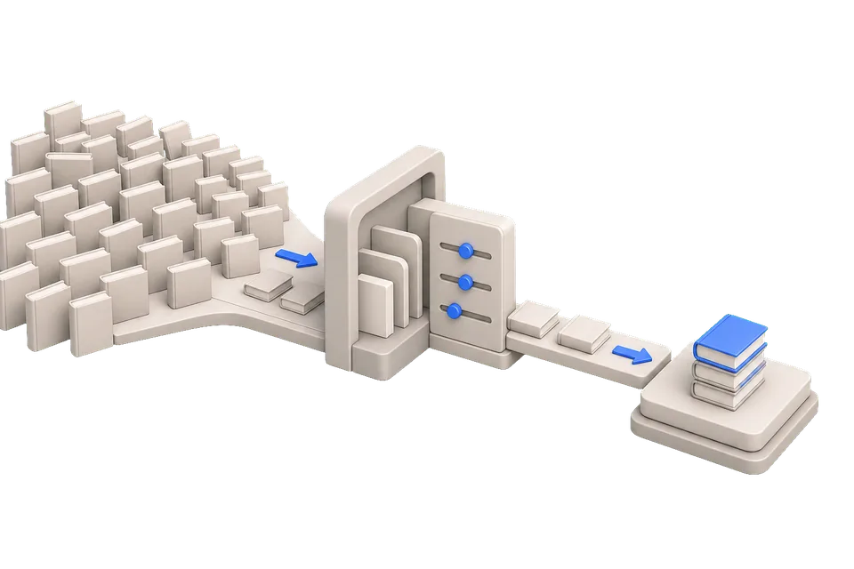
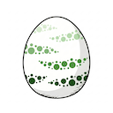

질문 중심 순위 계산
질문 중심·섞기·취향 중심 세 가지 비중 묶음으로 순위를 매깁니다.
북켓몬 AI 도서 추천 · 팀 프로젝트
북켓몬은 읽고 싶은 책을 문장으로 말하면 후보를 추려 5권을 골라 주는 도서 추천 서비스입니다.
추천 순위를 매기는 규칙을 설계하고, 팀원 4명이 직접 채점해 효과를 쟀습니다.
내 담당순위 계산 수식과 거르는 조건 직접 설계 · 평가 기준 설계와 채점 · 추천 파이프라인과 DB 스키마 설계 주도
장르나 읽는 목적을
문장으로 입력합니다.
문장의 뜻이 가까운 책을
약 10만 권에서 찾습니다.
장르·독자층·싫어하는 조건을
더하고 빼 순위를 정합니다.
추천 목록에서 책을 고르고
독서 기록을 남깁니다.
후보 도서 수가 줄어드는 과정설계 기준
실제 실행에서는 질문 종류에 따라 권수가 달라집니다.

처음에는 취향·인기·신간 점수를 가중합하는 수식을 설계했습니다. 돌려 보니 인기·신간 점수가 커져 사용자 맞춤의 의미가 없었습니다.
질문을 중심으로 후보를 더 뽑도록 순위 계산을 다시 짰습니다. 문장 뜻 점수에 가장 큰 비중을 두고 인기·신간 항은 뺐습니다. 장르·독자층·싫어하는 조건은 가점과 감점으로 넣었습니다.
처음 수식과 바꾼 수식 보기이 규칙을 끈 목록(문장 뜻 점수만)과 켠 목록을 18개 질의의 상위 5권으로 비교했습니다. 팀원 4명이 0·1·2점으로 직접 채점했습니다.
맞지 않는 책이 90권 중 14권에서 2권으로 줄었습니다.
평가 자세히 보기질문 중심·섞기·취향 중심 세 가지 비중 묶음으로 순위를 매깁니다.
취향 정보가 적을 때와 쌓인 뒤를 구분합니다.
독서 기록이 경험치가 되어 북켓몬이 알에서 진화합니다.

알부화진화추천 품질 평가
장르·독자층·싫어하는 조건을 반영하는 순위 규칙을 끈 목록(문장 뜻 점수만)과 켠 목록을 같은 질의로 비교했습니다.
전체 평가 조건과 표 보기추천된 책 한 권 부적합으로 채점된 책
18개 질의 × 상위 5권 = 90권. 팀원 4명이 0·1·2점으로 직접 채점해 0점을 부적합으로 셌습니다.
오프라인 평가 결과입니다. 규칙을 고친 뒤 같은 18개 질의로 다시 잰 값이라 따로 떼어 둔 시험 질의는 없고, 실서비스 이용 효과는 추가 검증 대상입니다.
설계와 근거
처음 설계 · 4월 팀 회의록
최종 점수 = w₁·취향 + w₂·인기 + w₃·신간 신규 사용자: 0.1 · 0.7 · 0.2 기록이 쌓인 사용자: 0.5 · 0.3 · 0.2
인기는 도서관 대출 통계, 신간은 출간일로 계산하도록 설계했습니다.
실제 구현 · 저장소의 순위 계산 코드
| 묶음 | 문장 뜻 점수 비중 |
|---|---|
| 질문 중심 | 0.74 |
| 섞기 | 0.57 |
| 취향 중심 | 0.45 |
나머지 비중은 장르·독서 목적·서재 기록·리뷰 가점과 독자층 불일치·싫어하는 조건 감점으로 나눴습니다. 인기·신간 항은 없습니다.
바꾼 이유 처음 수식으로 돌려 보니 인기·신간 점수가 커져 사용자 맞춤의 의미가 없었습니다. 그래서 질문을 중심으로 후보를 더 뽑도록 바꿨습니다.
처음 설계한 수식(취향·인기·신간 가중합)을 예시 책 6권으로 돌려 볼 수 있습니다. 「콜드스타트」 묶음을 누르면 취향 점수가 낮은 베스트셀러가 1위가 됩니다. 실제 서비스에서 이 수식을 버린 이유입니다.
설계가 실제로 효과 있었는지를 데이터로 확인한 기록입니다.
수치는 오프라인 평가 기준이며 실서비스 성능을 단정하지 않습니다.
| 조건 | Precision@5 | Bad Rate@5 | Δ Precision |
|---|---|---|---|
| 규칙 켬 (장르·독자층·싫어하는 조건 반영) | 97.78% | 2.22% | 기준 |
| 규칙 끔 (문장 뜻 점수만) | 84.44% | 15.56% | Δ −13.34%p |
합성 페르소나 1,109명 · 7:2:1 분할 · Qdrant 호출 없는 오프라인 50개 채점. 비선호 노출 1.45%(test).
LightFM val 46.84% · test 29.15%(gap 병기)
CLOVA 90.09%보다 1.05%p 높았고, 응답은 0.59초 느렸습니다. 품질 쪽을 골랐습니다.
같은 Qdrant 상위 50권 조건 비교. 차이가 작아 질의를 늘려 다시 재 볼 대상.
Q001~Q018 채점 하네스를 설계하고 팀원 4명이 직접 채점했습니다. 버그(오디언스 미스매치) 발견 → 신호 보강 → 정량 개선 루프를 직접 운영했습니다.
Spring Boot(서비스)와 FastAPI(AI)를 나눠, 모델을 바꿀 때 백엔드는 그대로 두고 AI 서버만 다시 올립니다.
RDB 스키마(사용자·XP·도서·상호작용) 설계를 주도했습니다. 도서 벡터는 약 10만 건(1,024차원)을 Qdrant에 넣었습니다.
질의에서 최종 추천까지 레이어별 역할을 분리해,
ML 모델 교체 시 무중단 롤링 업데이트가 가능한 구조를 설계했습니다.
다시 정렬하는 단계는 HCX와 gte-reranker-server 가운데 고를 수 있게 따로 떼어 두었고, 기본 설정에서는 꺼져 있습니다. ML 모델을 교체할 때 Spring Boot 백엔드는 건드리지 않고 AI 서버만 롤링 업데이트합니다. 레이어 분리 설계의 일부입니다.
React + Vite SPA. Google/Kakao OAuth 2.0 소셜 로그인. 북켓몬 진화 연출·XP 대시보드 포함.
소셜 로그인(OAuth2)과 독서 기록에 따른 경험치·캐릭터 단계 저장. RDB 스키마 설계 주도.
Spring Boot(비즈니스)↔FastAPI(AI) 레이어 분리. Stage 1 bi-encoder(KURE·Qdrant) → Stage 2 cross-encoder(GTE Reranker 전용서버 + HCX 배치리랭킹) 순서로 추천 흐름. ML 모델 교체 시 AI 서버만 롤링 업데이트. APScheduler로 대출 통계 주기 갱신.
PostgreSQL(사용자·XP·도서 RDB)·Qdrant(10만 벡터 · 1,024차원 Cosine)·Redis(세션·캐시)로 역할 분리. Docker Compose · K3s · GitLab CI/CD · Cloudflare · NAS 인프라 위에서 운영.
한국어 임베딩 2종을 동일 환경에서 테스트
트레이드오프를 측정해 비교하고 선택 근거에 반영
*임베딩: 문장을 숫자 벡터로 바꾼 표현 / Precision@50: 상위 50개 중 적합 비율
추천 결과를 한 번에 보여 주는 화면이라 0.59초가 늘어도 품질 차이를 택했습니다. 차이가 1.05%p로 작아, 질의를 늘려 다시 재 볼 대상입니다.
KURE Embedding으로 Qdrant에서 후보 100권을 빠르게 추출. 벡터 내적만 계산해 대규모 코퍼스에서도 낮은 지연을 유지.
켜면 GTE Reranker 서버가 질문과 책을 함께 읽고 최종 5권을 다시 정렬합니다. 기본 설정에서는 꺼져 있는 선택 단계입니다.
설계 근거 빠른 검색과 느리지만 정밀한 재정렬을 단계로 나누는 방식입니다. Nogueira & Cho, Passage Re-ranking with BERT (2019) [논문] 참고. 모델은 Alibaba-NLP/gte-multilingual-reranker-base를 씁니다.
*Cross-encoder: 질문·문서를 함께 넣어 정밀 채점 / GTE Reranker: 검색 결과를 다시 정밀 정렬하는 모델 / RAG: 검색한 내용으로 답을 생성하는 구조
추천 파이프라인, 콜드스타트(데이터 없는 신규 유저 추천 문제) 전환, 게이미피케이션 리텐션을 하나의 제품으로 묶었습니다.
문장 뜻 점수에 장르·독서 목적·서재 기록·리뷰 가점과 독자층 불일치·싫어하는 조건 감점을 더해 순위를 정합니다. 처음 설계한 취향·인기·신간 수식을 버린 이유는 「추천 순위를 어떻게 설계했나」에 있습니다.
NVIDIA에서 제공한 Nemotron 한국인 합성 페르소나 100만 건(CC-BY-4.0)을 시드와 시뮬 평가에 활용했습니다. 취향 기록이 없는 신규 사용자를 흉내 내 추천을 시험하는 데 썼습니다.
18개 쿼리(Q001~Q018)에 사람이 0·1·2점을 매기는 채점 기준을 만들고, 규칙 적용 전후를 비교했습니다. 어긋난 추천(오디언스 미스매치)을 찾으면 신호를 보강하고 다시 채점했습니다.
합성 페르소나 1,109명 데이터를 7:2:1로 나눠 학습한 LightFM 모델이 Top-50에서 Top-20을 추립니다. 긍정 선호 포착율 90.52%, 비선호 노출 1.45%(test). 전체 카탈로그 Positive Hit@20은 val 46.84% · test 29.15%입니다.
북켓몬은 추천받은 책을 읽고, 독서 기록을 남기면 경험치(XP)를 제공하는 서비스입니다. 사용자는 이 경험치로 나의 독서 파트너 북켓몬을 키울 수 있습니다. 책을 추천받고 다시 방문할 이유를 게이미피케이션으로 만듭니다.
도서관정보나루(data4library.kr)와 실시간 API로 연동해 추천받은 책의 대여 가능 여부를 확인 가능합니다. 추천이 실제 대출로 이어지게 하려는 기능입니다.
학습할 데이터는 사용자가 다시 찾아와야 생깁니다.
처음에는 모델 학습이 가장 큰 문제라고 봤습니다. 그런데 추천이 한 번으로 끝나면 학습할 데이터가 쌓이지 않습니다. 그래서 사용자에게 맞춘 추천과 함께, 독서 기록으로 캐릭터를 키우는 요소를 넣어 다시 찾아올 이유를 만들었습니다.
오프라인 평가로 측정한 것과 측정하지 못한 것을 솔직하게 기록합니다.
룰 ablation에서 행동·개인화 신호(리뷰·서재·audience) 효과는 "프로필 제외 평가" 구조상 제한적으로 측정됐습니다. 행동 신호 효과를 검증하려면 실제 유저 로그 기반 온라인 평가가 필요합니다.
→ 온라인 A/B 테스트 인프라 구성 → 룰·가중치 실시간 검증 루프 필요LightFM candidate-eval은 Qdrant 호출 없는 오프라인 근사(50개 채점) 기준입니다. val 46.84% · test 29.15%. 두 수치를 함께 보고하며, 실서비스 추천 루프와 완전히 동일한 환경 평가는 미완입니다.
→ Qdrant 연동 온라인 평가 루프 구성 필요최적 조합(llm_search_query × dense × current) Top-5 결과는 오프라인 특정 구성 평가 기준이며, 모든 조합과 실서비스 성능을 뜻하지 않습니다.
→ 다양한 조합·실서비스 조건에서 추가 검증 필요현재 평가는 팀원 직접 채점 기반 질의-추천 적합성 중심입니다. RAGAS(Es et al., arXiv:2309.15217, 2023)의 faithfulness·answer_relevancy·context_recall 지표는 미측정입니다. HCX 리랭킹 단계의 hallucinate 여부를 정량화하는 데 적합하지만, 현재 미구현 상태입니다.
→ 향후 온라인 A/B 테스트와 병행해 RAGAS 기반 retrieval 품질 평가 적용 계획